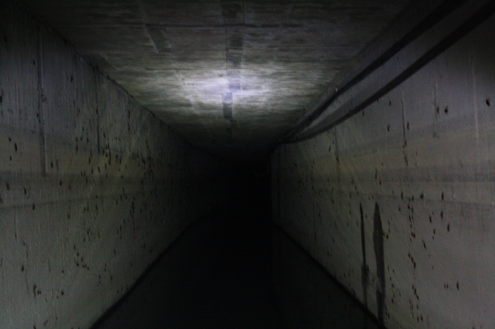
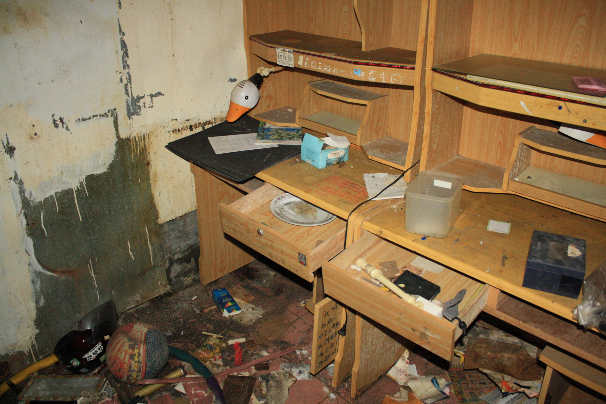
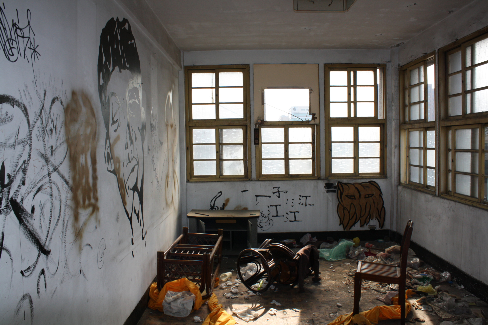
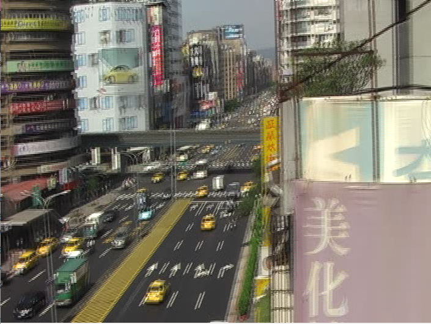
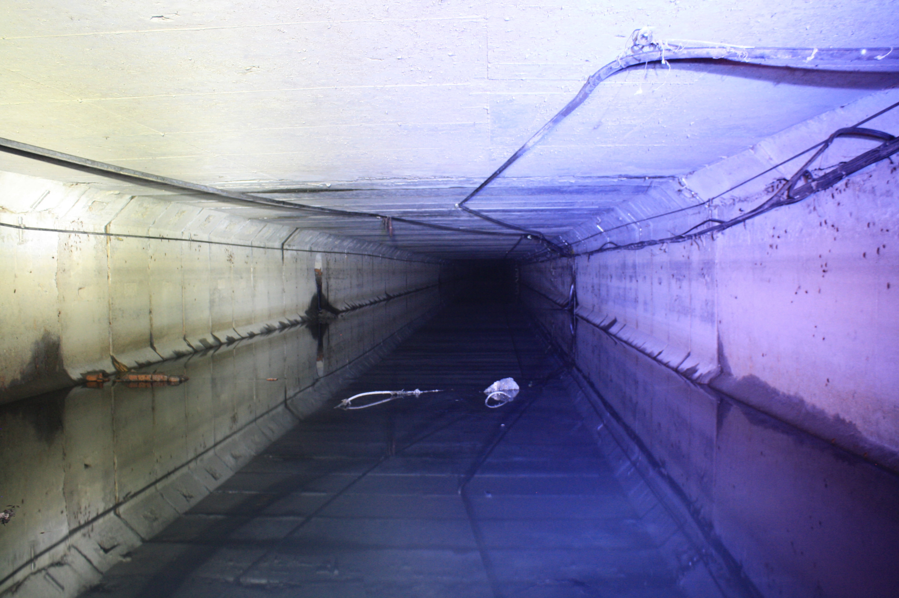
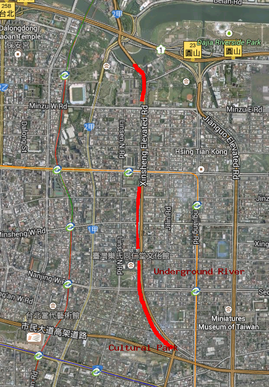

Taipei New Life Road
Home
The first time I went out to take pictures in Taipei, I tried to photograph a woman with a disfigured eye who was selling flowers on the street. This seemed like the kind of documentary photography I wanted to produce with my new DSLR. The woman raised her hand to cover her face, and I knew instantly that I was too much of a "pussy" to photograph other people.


Growing up in Buffalo, New York, I explored many abandoned buildings, including factories, theaters, hospitals, train stations, and offices.
In Taipei, there were a large number of vacant postwar buildings, but most of them were in the process of being destroyed and redeveloped, they were not truly abandoned.
These buildings had their own internal streets and breezeways, and seemed to reflect the more idealistic ambitions of the Republic of China in the early 60s. The apartments were usually had wall calendars from around 2003 to 2009.



I was hardly the only person to realize the fraught nature of these buildings. I often stumbled on elaborate art projects and graffiti, especially near arts colleges.


During the first half of my year as an exchange student in Taiwan, I sort of enjoyed the isolation that the language barrier provided. My distate for mangling the Chinese language gave me an excuse to simply spend most of my time wandering alone, looking for "things", or going over vocabularly and pronounciation with my doting host mother.

Sometimes I'd explore things with other exchange students. One time, I convinced one of the French students to break away from the group to check out a half-finished seaside resort. What would have been a massive glass-enclosed lobby was only steel beams, opening over bright blue waves. Other parts of the building were almost complete: some bedrooms were decorated with plastic flowers; some doors and hallways opened to six story drops. As we walked back along the beach, the French exchange student told me how attractive she found my normal exploration partner, another American student.



The process of writing college applications was difficult for my mental health. As my time in Taiwan drew to a close, my explorations became more compulsive and subterranean.




My biggest project was exploring a network of drainage tunnels I found under a a "cultural park". After a few explorations, I realized that the tunnels led to a five mile long underground river under the center of Taipei. I planned to buy an inflatable kayak and the paddle the length of the river.


I haven't looked at these pictures in almost five years, and I wonder if I'd still enjoy something like this. Would the red cockroaches covering the walls be more of a dealbreaker? As an adult, I could get a Masters of Engineering and work in drainage tunnels for a living, if I truly loved them.

One time, when I was walking down a narrow passageway, I realized there was another light coming towards me. I thought it might be own flashlight reflecting off something. I turned my light off, and could see a person moving at the far end of the hallway. I think he was shouting at me, but I couldn't tell what he was saying over the sound of the water.
I felt intense dread. Was this the police, down here looking for me? Had I made a terrible mistake? What would my parents say? No one knew I was down in the tunnels.
Ending the standoff, I took a picture, turned around, and quickly walked away.

After a successful exploration, I usually ate McDonalds. Living in Taiwan made me really appreciate McDonalds, where I could go even if drenched in drainage water, eat a Big Mac, and listen to young Taiwanese businesspeople discuss their plans.
I stopped doing these explorations a few years ago. Why? In Taiwan, and in Buffalo, I got caught a few times, but it was never a big deal.
I think I'm mostly afraid of the embarassment of being an adult caught doing childish things.